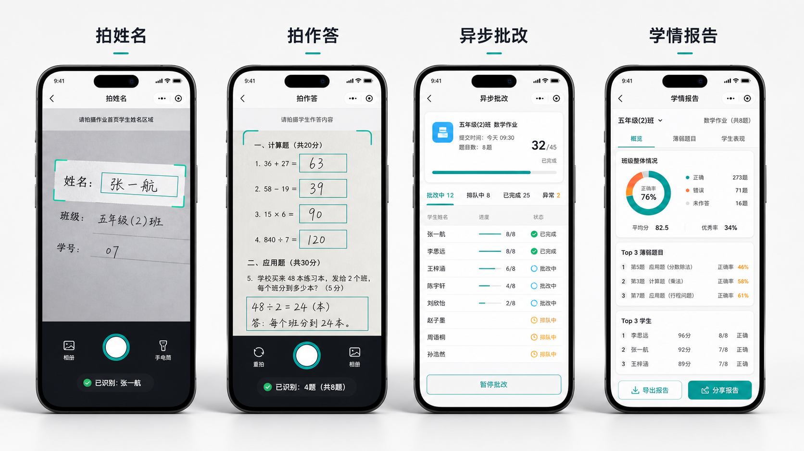

拍空白题目
自动识别题框、题号、分值、题型和知识点。
一摞乱序作业本里，老师要确认是谁的作业、哪一页、哪几题、按什么标准给分，还要把结果整理成讲评课。希沃智教π把“批改”变成一个 AI Native 流水线，让每次作业直接进入教学闭环。
符合校内设备管理要求，由教师完成采集；学生和家长不需要用手机上传作业。
自动识别题框、题号、分值、题型和知识点。
AI 生成过程分 Rubric，教师确认后生效。
姓名 OCR 与班级名单匹配，乱序作业当场绑定。
拍第二页时，第一页已经进入 OCR 和判分队列。
主观题、低置信度题、异常学生自动进入重点队列。
输出丢分 TOP3、低分 TOP3、讲评教案和白板课件。
智教π定位为希沃生态中“评”的组件，连接白板、大屏、易课堂、视频展台和 AI 教学空间。
飞书承担“协作与监控中枢”：机器人推送批改进度，消息卡片展示 TOP3 学情，多维表格沉淀作业记录，Aily 作为教研助教回答自然语言问题。
“本次最该讲哪三题？”
批改完成、异常分和复核任务自动推送。
作业、学生、题目、错因、复核状态持续沉淀。
定时巡检 OCR 失败率、低置信度题目和未复核任务。
不是把整张图丢给大模型，而是拆成稳定的识别、评分、诊断和教学生成链路。
切题、手写体、公式、姓名识别
答案解析、步骤分、知识点映射
客观题比对、主观题证据评分
六维错因、异常分、掌握率计算
讲评教案、变式题、家校反馈
界面围绕“拍姓名、拍作答、看队列、看报告”四个高频动作设计，减少录入和等待。
